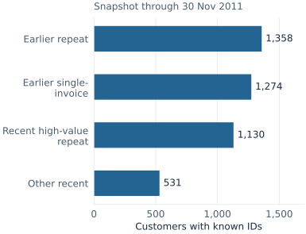
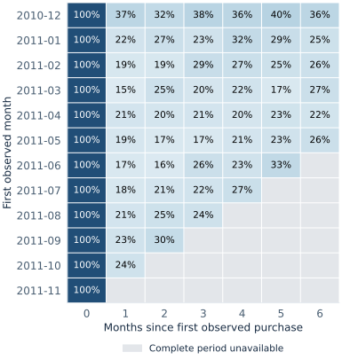

01. The business question
A retail operations team needs a consistent view of recorded sales and credits. A customer marketing team needs to know which identifiable shoppers bought recently, returned for another order, and had higher net recorded value.
The pipeline builds both views from the same classified invoice lines so the impact of cancelled invoices and missing customer IDs is visible.
02. Data and observation window
UCI Online Retail contains 541,909 invoice lines from a UK-based online retailer, recorded December 1, 2010 through December 9, 2011. The file includes invoice and item codes, quantity, unit price in pounds sterling, invoice timestamps, country, and customer IDs where recorded.
The customer snapshot uses December 1, 2011 as its cutoff. Monthly trend and cohort comparisons stop at November 2011 so their final month has a full observation window. Reconciliation retains all source lines and keeps the partial month visible as part of the import.
Daqing Chen (2015), Online Retail, UCI Machine Learning Repository. Accessed November 18, 2026. UCI Online Retail · DOI 10.24432/C5BW33 · CC BY 4.0
03. SQL from invoice lines to reports
- Ingest the workbook
- Classify each line
- Summarize by month
- Build customer segments
- Measure repeat purchase
Reconcile sales and credits
A sale line has positive quantity, positive unit price, and an invoice code without the C cancellation prefix. A credit line has negative quantity, positive unit price, and a C invoice code. The pipeline reports zero-value lines, administrative and nonstandard codes, and negative quantities without a cancellation code separately. The data dictionary provides the exact exclusions. Recognized line value multiplies quantity by unit price. Monthly net line value subtracts credit magnitude from gross sale value.
Eligible lines without a customer ID contribute to financial summaries. The customer-level marts use only identified records to avoid treating anonymous invoices as one shopper. The public reports contain aggregates.
Build a customer snapshot
Recency is the number of days since a customer’s last recognized sale, frequency counts distinct qualifying invoices, and monetary value uses recognized sales minus credits. The rule-based segments combine whether the latest purchase was within 30 days, whether the customer had at least two purchase invoices, and whether net value was at least the eligible-customer median.
Track first-observed purchase cohorts
Customers enter a cohort in the month of their first observed qualifying purchase. Repeat purchase rates count the share who made a qualifying purchase in each later month. The fixed cutoff leaves more follow-up time for earlier cohorts and fewer observable months for recent ones.
04. Retail reporting results
The commercial ledger reconciled £10,563,520.52 in gross paid line value and £490,663.71 in posted credits to £10,072,856.81 in net recorded line value. The extract contains 19,852 distinct paid invoices.
Ledger reconciliation
The pipeline classified all 541,909 source lines. It counted 529,765 sale lines and 8,833 credit lines and isolated 3,311 excluded lines. Customer ID was missing on 135,080 source lines. Eligible lines with missing IDs contributed £1,700,940.89 to recorded net value.
November 2011 had the highest net line value of the complete months, at £1,480,295.72. The partial December 2011 figure was £464,172.32 through December 9. Use the complete months for month-to-month comparisons.

Customer segmentation snapshot
The customer snapshot contains 4,293 identified buyers with a qualifying paid invoice. The monetary threshold was the observed net value median, £642.81. The recent high-value repeat segment contained 1,130 customers.
| RFM segment | Customers | Median days since purchase | Median paid invoices | Median net value |
|---|---|---|---|---|
| Recent high-value repeat | 1,130 | 11 | 6 | £2,043.16 |
| Other recent | 531 | 15 | 1 | £344.00 |
| Earlier repeat | 1,358 | 78 | 3 | £849.44 |
| Earlier single-invoice | 1,274 | 174 | 1 | £254.78 |

Repeat purchase activity
Among 884 customers first observed in December 2010, 323 made a qualifying purchase in the next month (36.5%). A first observed purchase only anchors the cohort in this file.

05. Recommendations and limits
Use complete months for regular performance comparisons. Reconcile credits to the operational ledger and review anonymous invoice coverage before interpreting changes across months.
Consider a small retention pilot with eligible recent repeat buyers. Track subsequent orders, contribution margin, and opt-outs against a comparison group. Review results before expanding outreach.
Line value summarizes the invoice extract. Measuring profit requires costs and accounting adjustments that this file omits. Finance should reconcile the transaction categories and credits to the underlying ledger before using them in formal reporting.
The file starts after some customers may have already shopped. A first observed purchase anchors follow-up within the extract. A month without a recorded purchase shows a gap in observed activity, and customers can return later.
06. Reproduce the study
The Python entry point downloads the UCI workbook and runs the DuckDB transformations. The project includes the data dictionary, validation tests, and aggregate reporting outputs.
cd projects/online-retail
python -m pip install -r requirements.txt
python -m src.run